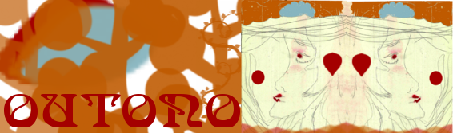

Wiqua, musa do outono de 2011, montando o tarô tecnomágico...
Eis que surge o processo: remix de decisões, futuros, presentes, de colaboração, de pessoas. Eis que surge o outono, com ares gélidos ainda não tão óbvios. Assim como o sol ainda presente, mas já de saída.
A musa destes dias se chama Wiqua, aquela que nasceu tupi e brinca com feitiços, tece oráculos, joga baralhos. É fruto da imersão da wicca em processo wiki, aquele que se colocou como certeza de nossos tempos, de nossas ciberculturas. Wiqua traz as tags de wikifiction: um lugar de construir imaginários coletivos fabulosos.
Navegue pelas cartas de Wiqua usando os links abaixo, ou baixe um arquivo compactado com o tarô completo [1] (RAR, 1.9Mb).
Atualizando em 23/08/11: publicamos também uma versão PDF do tarô Wiqua [2] (1.7Mb).
Dos diálogos mutgambicos:
- "wikka, ops wicca :)"
- "wikka=wicca, gostei ;)"
- "acho wicca massa pro contexto de outono."
- "voto wicca :) já que tem a ver com feitiços, advinhações, rituais, mitos, baralho, oraculismo."
- "ou wikka, pra brincar com o sistema de wiki?"
- "wikka, que traz as tags anteriores a possibilidade colaborativa. alguem um dia tinha me dito wikifiction ehehhe. um lugar de cnstruir imaginarios coletivos fabulosos."
- "wikka... tem + a ver com ess nosso contexto."
- "uma bruxa."
- "wiqua se nascesse tupi :)"
- "wiqua!!!!"
- "wiqua +1!"
- "Nosa musa de outono demorou pra nascer.
Estava no meio, no entre, no processo, de decisões, futuros, presentes.
Na verdade já estava por aqui, já era, já estava.
Mas parece que nós sempre procuramos acolá, mais do que aqui.
Por wikka=wicca parecia que era seu nome.
Wikka se colocou como certeza de nossos tempos, de nossas ciberculturas.
Mas que certezas?
Nenhuma certeza. Apenas a visão, o olfato, todos os sentidos de 'Wiqua' se nascesse tupi."
 [8]
[8]

 [19]
[19]
Links:
[1] http://mutgamb.org/sites/mutgamb.org/files/mutsaz/wiqua/wiqua_taro.rar
[2] http://mutgamb.org/sites/mutgamb.org/files/mutsaz/wiqua/wiqua.pdf
[3] http://twitter.com/#!/dricaveloso/status/81148351181111296
[4] http://twitter.com/#!/marcbraz/status/80871056176463872
[5] http://timothystephany.com/images/treesnakeeagle.jpg
[6] http://twitter.com/#!/mabegalli/status/80920850441838592
[7] http://twitter.com/#!/dasilvaorg/status/81219129545199616
[8] http://alfarrabio.org/index.php?itemid=3354
[9] http://twitter.com/#!/yupanakernel/status/81107582500077572
[10] http://twitter.com/#!/efeefe/status/81100962592333826
[11] http://twitter.com/#!/efeefe/status/81098544349589504
[12] http://twitter.com/#!/yupanakernel/status/80509136885907456
[13] http://twitter.com/#!/yupanakernel/status/81040361576857600
[14] http://twitter.com/#!/dasilvaorg/status/81127763230203905
[15] http://twitter.com/#!/yupanakernel/status/81212774134452224
[16] http://twitter.com/#!/folowME_YURlost/status/80710281315098625
[17] http://twitter.com/#!/yupanakernel/status/81216336889520129
[18] http://mostre.me/metaars
[19] http://fruido.blogspot.com/2011/06/ovo.html

{kind=link}